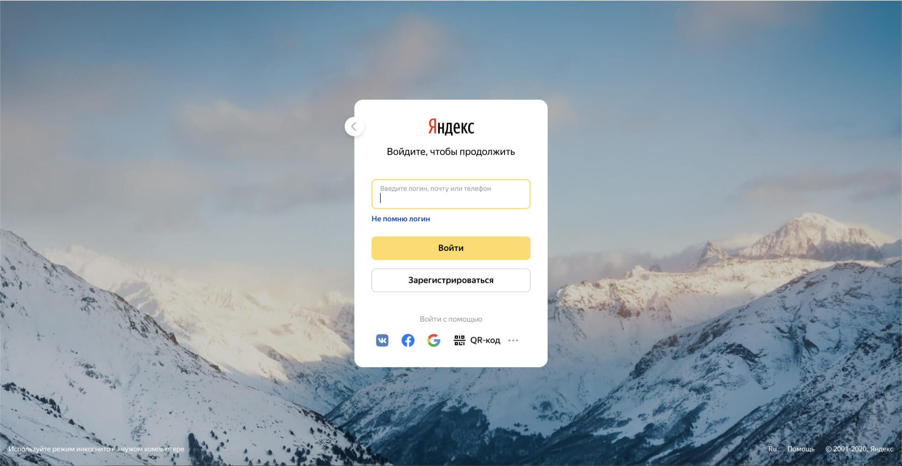
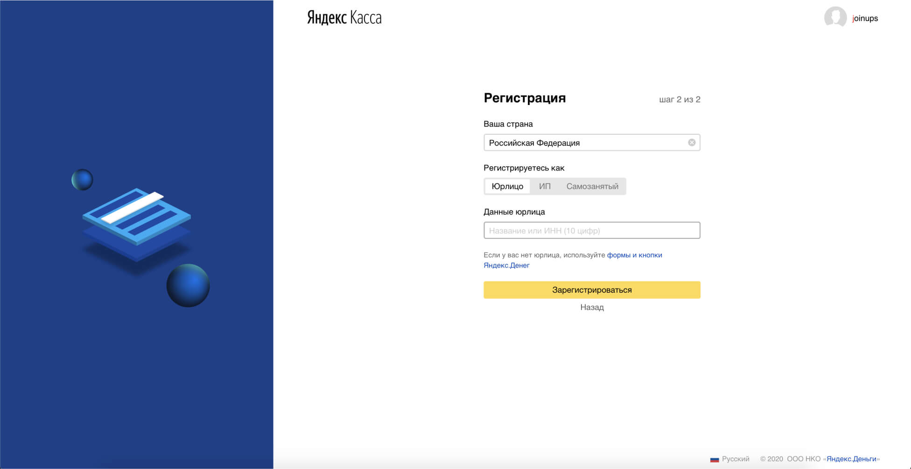
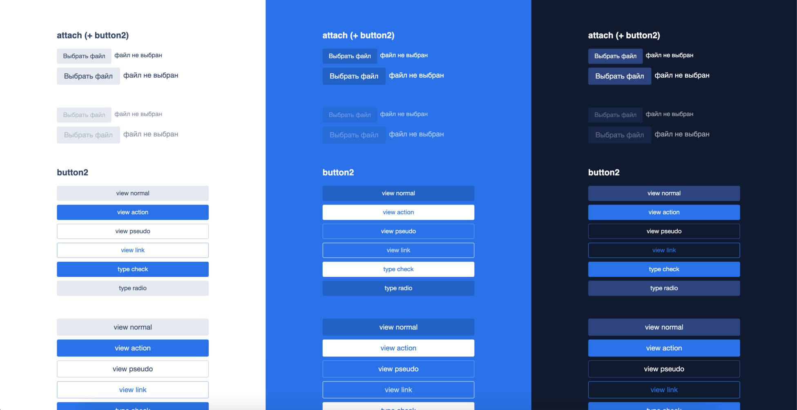

The service for accepting online and offline payments with fast onboarding process and modern API. Yandex.Checkout has been the most popular payment application in Russia since 2015.
My work
Feel free to pop into the Figma file that includes most of these cases bellow.
— Setting up B2B Design system,
— Designing B2B projects, core Yandex.Checkout applications and services,
— Onboarding new product designers and mentoring junior designers,
— Leading the design of Yandex.Checkout Mobile App,
— Working in the cross-functional product team using scrum methodology.
Projects and skills:
Improvements to the onboarding process in Yandex.Checkout. Registration, authentication and oAuth. This part was a home design assignment, which became the main test period assignment.
— Fixing UX problems helped increase the conversion of merchants to move to the next stage, to sign a contract.
 The next stage of development was a large project — Conclusion of a contract and onboarding of merchants.
— Collaboration with PO reduced the number of steps and helped get rid of unnecessary fields,
— Improving the communication process with merchants, that includes letters and sms has reduced merchants
lost and shortened the time from registration to sign a contract.
— All work has increased the conversion rate of signing a contract with the company.
Leading and design new functions of the Yandex.Checkout application
The most frequent user request was about the possibility of creating invoices in the application. Designed the task from start to release.
Based on the experience of developing the web part, I was engaged in improving the application authentication process.
Proposed the concept of the main page, defended and brought the main page screen to release.
Designed support chat for merchants, from start to release
— After I started working on the application, the user rating for the application increased from 2.8 to 4.
Incharge of the design of the Yandex.Checkout Design system and tasks to improve our design team processes.
— Create and debug web themes, in code and in Figma,
— Creation of design components and patterns in Figma and control of implementation in the code side.
Created guides for B2B directions. The guide includes: the composition of the design team, a description of the products of the company, a list of development teams, interface patterns, a description of design components, design themes documentation, etc.
— Helped to simplify the onboarding of new designers, especially when working remotely.
 Check it out on Codesandbox ->Created guides for B2B design team
The guide includes: the composition of the design team, a description of the products of the company, a list of development teams, interface patterns, a description of design components, design themes documentation, etc.
Created guides for B2B directions. The guide includes: the composition of the design team, a description of the products of the company, a list of development teams, interface patterns, a description of design components, design themes documentation, etc.
— Helped to simplify the onboarding of new designers, especially when working remotely.
Structuring and designing consistent Figma file covers for all company teams
— Helped to quickly find a responsible designer,
— Improved understanding what a file includes and what status it has,
— I brought all the covers to a constant and understandable look to everyone.
Manager and mentor skills
— Onboarding new designers,
— I advise junior and middle designers on the arrangement of design components
in the code, work in Figma
design libraries and on product issues,
— I communicate with Figma managers on company issues, including a meeting
with Dylan Field, the co-founder
of Figma,
— I supervise the tasks of Yandex.Checkout designers.
Feel free to pop into the Figma file that includes most of these cases.